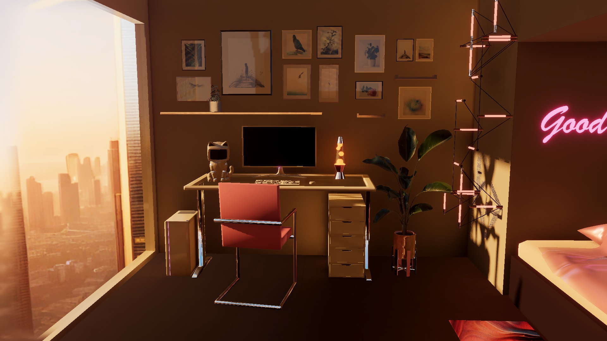
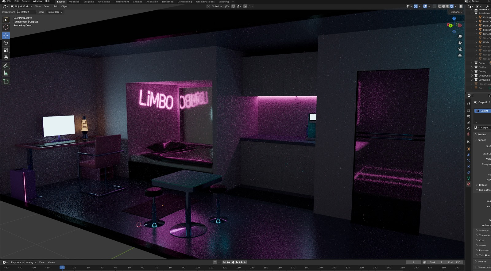
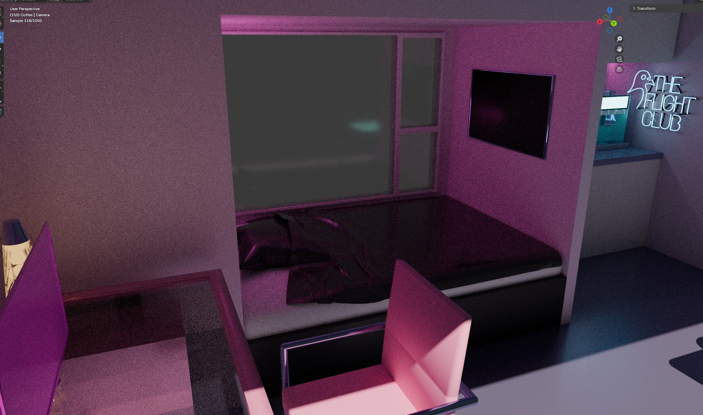
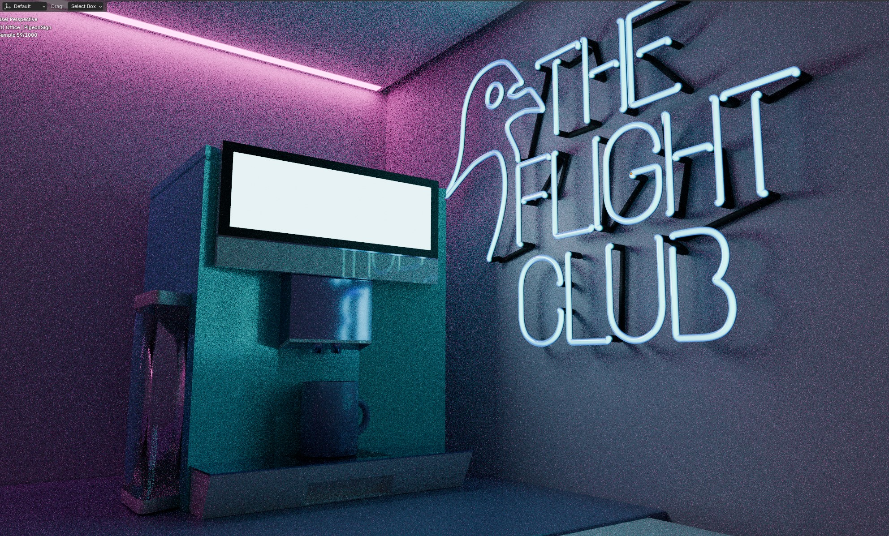
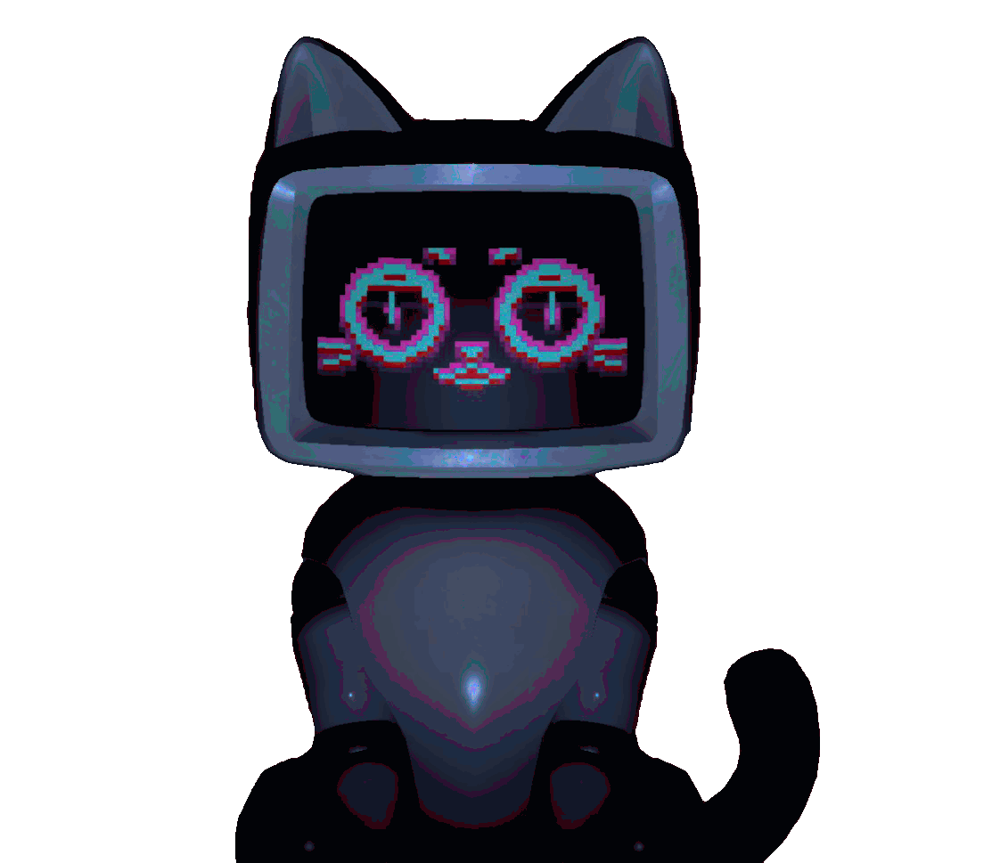

The Concept
Complicity is a game-based study that investigates how taking on different roles, the "Victim" or the "Exploiter", shapes a person’s understanding of exploitative design. While most research views Dark Patterns from the victim's perspective, this project asks a different question: Does acting as the architect of manipulation create a deeper level of awareness than simply being its target?
The Dual-Perspective Gameplay
The project features a mirrored quest system where the core mechanics are identical, but the framing changes entirely based on your assigned role:
Research Goal
The thesis aims to discover if the "Exploiter" role leads to a deeper, more durable awareness of dark patterns compared to traditional victim-side learning. By forcing players to engage with the logic of manipulation, the study explores whether active complicity fosters a more critical eye toward real-world digital systems.
Project Details
